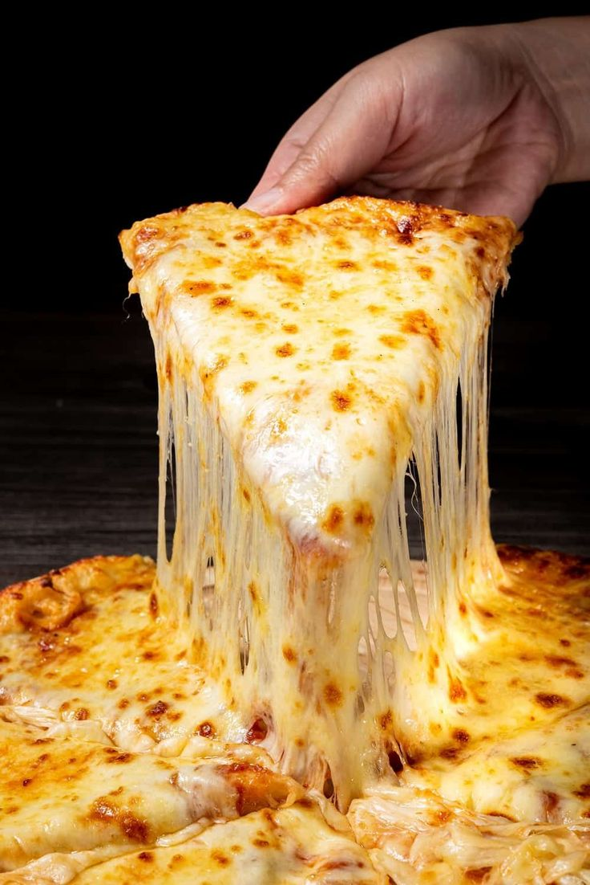

Cheese Pizza!

Pizza cheese encompasses several varieties and types of cheeses and dairy products that are designed and manufactured for use specifically on pizza. These include processed and modified cheese such as mozzarella-like processed cheeses and mozzarella variants. The term can also refer to any type of cheese suitable for use on pizza. The most popular cheeses used in the preparation of pizza are mozzarella (accounting for about 30%), provolone, cheddar and Parmesan.
Ingredients
- Pizza dough
- Tomato sauce
- 1/4 cup Mozzarella cheese
- Pizza toppings of your choice(optional)
Steps
- First, preheat the oven to 400°.
- Then, place the pizza dough on the baking sheet of the oven, topping each one with tomato sauce, and your desired toppings.
- After that, bake the crusts for approximately 10 minutes, or until the cheese is melted as well as bubbly.
- Thereafter, remove the pizzas from the oven, and let them cool off slightly.
- Next, transfer your pizzas into separate plates, slice them into appropriate pieces, and serve right away!